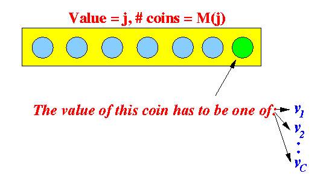
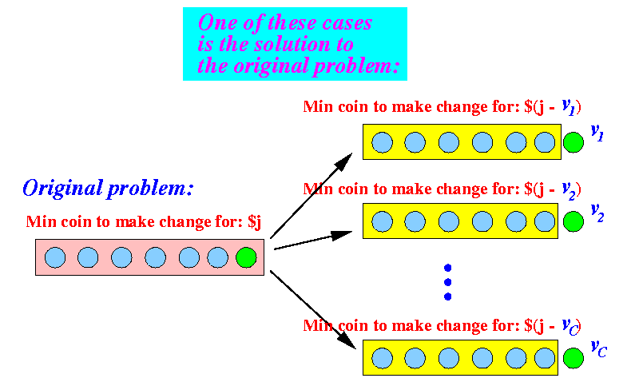

- Problem description:
- There are C different denominations of
coins/bills in use with values:
- v1 < v2 < ... < vC
- We assume that
- v1 = 1
(So that we can always make change for any amount)
- You need to pay
someone a certain anount of
money $N
- Find the minimum # of coins/bills that you need to use to make the change for $N
- There are C different denominations of
coins/bills in use with values:
- Example:
- Denominations:
- 1, 5, 10, 25
- Minimum # coins/bills to make change for:
- Make change for 35:
- Min: 2 coins (10 + 25)
- Make change for 37:
- Min: 4 coins (25 + 10 + 1 + 1)
- Make change for 35:
- Denominations:
- Tough example:
- Denominations:
- 1, 3, 9, 19, 26
- Minimum # coins/bills to make change for:
- Make change for
65: min ?
coins
- Make change for 66: min ? coins
- Make change for
65: min ?
coins
- Denominations:
- Define:
- M(j) = the minimum # coins/bills to make change for j (money units)
How can we:
- Divide the problem
M(j)
into
smaller subproblems
- And then use the solution(s) of the smaller problem(s) to solve the original problem M(j)
- Consider the
last coint in
M(j) coins:
 Fact:
- This last coin used must be one of the C possible demoninations
- Now, let us reason together:
- We do not know
which coin will be used
a the last coin....
but we do know the following facts
- If the
last coin had a
value v1, then:
- The remaining coins will be the smallest number of coins that is used to make change for the amount of j − v1
- If the
last coin had a
value v2, then:
- The remaining coins will be the smallest number of coins that is used to make change for the amount of j − v2
- And so on !!
- We do not know
which coin will be used
a the last coin....
- Therefore,
one of these
possible scenarios
must be the
optimal solution:
 Notice that:
- We have many
(the number of problems is C)
smaller problems:
- Smaller problem 1: Find minimum number of coin to make change for the amount of $(j − v1)
- Smaller problem 2: Find minimum number of coin to make change for the amount of $(j − v2)
- ...
- Smaller problem C: Find minimum number of coin to make change for the amount of $(j − vC)
- The solutions of these
smaller problems can
enable us to
solve the
original problem !!!
- We have many
(the number of problems is C)
smaller problems:
- Caveat:
- You can only use
a coin of value
$v1
to make change for
$j if:
j ≥ v1 (If the amount j < v1, you can't use this coin !)
- Similarly,
you can only use
a coin of value
$v2
to make change for
$j if:
j ≥ v2 (If the amount j < v2, you can't use this coin !)And so on !!!
- You can only use
a coin of value
$v1
to make change for
$j if:
- Psuedo code of the
divide and conquer
procedure:
findM( j, (v1,v2, ..., vC) ) { // Let us not worry about the base cases for now.... /* ======================================== Divide and conquer procedure to find min. # coins to change for $j ======================================== */ /* --------------------------------------------- Suppose last coin used has value v1 --------------------------------------------- */ if ( j >= v1 ) { sol1 = findM( j-v1, (v1,v2, ..., vC) ); mySol1 = sol1 + 1; // I will one more coin to make change for $j } /* --------------------------------------------- Suppose last coin used has value v2 --------------------------------------------- */ if ( j >= v2 ) { sol2 = findM( j-v2, (v1,v2, ..., vC) ); mySol2 = sol2 + 1; // I will need one more coin to make change for $j } .... (and so on) /* --------------------------------------------- Suppose last coin used has value vC --------------------------------------------- */ if ( j >= vC ) { solC = findM( j-vC, (v1,v2, ..., vC) ); mySolC = solC + 1; // I will need one more coin to make change for $j } /* ======================================================== The smallest # coins needed to make change for $j ======================================================== */ myFinalSol = min ( mySol1, MySol2, ...., mySolC ); // Note: use only the valid value mySoli !!! return ( myFinalSol ); }
- Note:
- As part of the
algorithm development, we must
choose a
suitable storage (data) structure
for the information used by the
algorithm
- Clearly, we should store the values (v1,v2, ..., vC) in an array (so we can use a (for) loop to write the about algorithm !!!
- As part of the
algorithm development, we must
choose a
suitable storage (data) structure
for the information used by the
algorithm
- Base case:
- You don't need any coins to make change for $0
In other words:
M(0) = 0
- Psuedo code:
findM( j, (v1,v2, ..., vC) ) { /* --------------------------- Base case --------------------------- */ if ( j == 0 ) { return(0); } /* ======================================== Divide and conquer procedure to find min. # coins to change for $j ======================================== */ /* --------------------------------------------- Suppose last coin used has value v1 --------------------------------------------- */ if ( j >= v1 ) { sol1 = findM( j-v1, (v1,v2, ..., vC) ); mySol1 = sol1 + 1; // I will one more coin to make change for $j } /* --------------------------------------------- Suppose last coin used has value v2 --------------------------------------------- */ if ( j >= v2 ) { sol2 = findM( j-v2, (v1,v2, ..., vC) ); mySol2 = sol2 + 1; // I will need one more coin to make change for $j } .... (and so on) /* --------------------------------------------- Suppose last coin used has value vC --------------------------------------------- */ if ( j >= vC ) { solC = findM( j-vC, (v1,v2, ..., vC) ); mySolC = solC + 1; // I will need one more coin to make change for $j } /* ======================================================== The smallest # coins needed to make change for $j ======================================================== */ myFinalSol = min ( mySol1, MySol2, ...., mySolC ); // Note: use only the valid value mySoli !!! return ( myFinalSol ); // Return answer }
- Java code:
static int M(int j, int[] v) { int[] sol, mySol; int myFinalSol; int k; sol = new int[v.length]; mySol = new int[v.length]; /* --------------------------- Base cases --------------------------- */ if ( j == 0 ) { return(0); } /* ================================================== Initialize mySol[] ================================================== */ for ( k = 0; k < v.length; k++ ) mySol[k] = -1; // -1 means: no solution /* -------------------------------------------------------- Try every denomination k = 1,2,..,C for the last coin -------------------------------------------------------- */ for ( k = 0; k < v.length; k++ ) { /* -------------------------------------------- Check if we can use the k-th denomination -------------------------------------------- */ if ( v[k] <= j ) { /* ------------------------ Divide step ------------------------ */ sol[k] = M(j - v[k], v); // Use coin v[k] as last coin mySol[k] = sol[k] + 1; // Solution to make change for $j } } /* -------------------------------------------------------- Find the minimum for ALL mySol[...] values Note: -1 means do NOT use ! -------------------------------------------------------- */ myFinalSol = -1; for ( k = 0; k < v.length; k++ ) { if ( mySol[k] >= 0 /* Don't use -1 values */ ) { if ( myFinalSol == -1 || mySol[k] < myFinalSol ) myFinalSol = mySol[k]; } } return(myFinalSol); // Return best solution }
- Example Program:
(Demo above code)

- Prog file: click here
How to run the program:
- Right click on link(s) and
save in a scratch directory
- To compile: javac Coins1.java
- To run:
java Coins1
Warning: will run very slow for large values !!!
- If you run the
pure recursive solution
for $N ≥ $60,
it will take
a LONG time
The reason for this slowness is:
- The pure recursive solution will re-compute the same solution multiple times !!!
- Data structure:
- There is one parameter used in the
recursive function:
static int M(int j, int[] v)
(The parameter int[] v is used to pass information on the values of the coins.
This parameter is not used to indicate the size of the problem being solve)
- Therefore, we must defined a
one dimensional array
to store the solutions:
int[] M;
- The size of this array is:
int[] M = new int[C+1]; // C = amount to make change for(because M(j) = minimum number of coins to make change for $j, we must create an array that has indices 0, 1, 2, ...., C).
- There is one parameter used in the
recursive function:
- Constructing the bottom-up Dyn. Prog. algorithm
for the coin change problem:
- The base case:
if ( j == 0 ) { return(0); }will result in:
M[0] = 0;
- The solution
returned by M(j,v)
(= myFinalSol) is
computed as follows:
/* -------------------------------------------------------- Find the minimum -------------------------------------------------------- */ myFinalSol = -1; for ( k = 0; k < v.length; k++ ) { if ( mySol[k] > 0 ) { if ( myFinalSol == -1 || mySol[k] < myFinalSol ) myFinalSol = mySol[k]; } }You must replace myFinalSol by M[j]:
/* -------------------------------------------------------- Find the minimum -------------------------------------------------------- */ M[j] = -1; for ( k = 0; k < v.length; k++ ) { if ( mySol[k] > 0 ) { if ( M[j] == -1 || mySol[k] < M[j] ) M[j] = mySol[k]; } }
- Remember that we
must compute
M[ ]
in the direction of
data flow:
for ( j = 0; j <= AmountToMakeChange; j++ ) { compute M[j] .... }
- The base case:
- Java code
for the bottom up dynamic programming
solution for coin change:
static int findM(int Am, int v[]) { int[] M; int[] sol, mySol; int j, k, min; M = new int[Am+1]; // Store results sol = new int[v.length]; mySol = new int[v.length]; /* --------------------------- Base case --------------------------- */ M[0] = 0; // 0 coins needed to make change for $0 /* --------------------------------------------------- The other cases (starting from 1 to M.length - 1) Follow direction of data flow ! --------------------------------------------------- */ for ( j = 1; j <= Am; j++ ) { /* ============================================ Find min # coin to make change for $j ============================================ */ for ( k = 0; k < v.length; k++ ) mySol[k] = -1; // Initialize mySol[] /* -------------------------------------------------------- Try every denomination k = 1,2,..,C for the last coin -------------------------------------------------------- */ for ( k = 0; k < v.length; k++ ) { /* -------------------------------------------- Check if we can use the k-th denomination -------------------------------------------- */ if ( v[k] <= j ) { /* ------------------------ Divide step ------------------------ */ sol[k] = M[j - v[k]]; // Use coin v[k] as last coin mySol[k] = sol[k] + 1; // Solution to make change for $j } } /* -------------------------------------------------------- Find the minimum of all mySol[...] -------------------------------------------------------- */ M[j] = -1; for ( k = 0; k < v.length; k++ ) { if ( mySol[k] > 0 ) { if ( M[j] == -1 || mySol[k] < M[j] ) M[j] = mySol[k]; } } } return( M[Am] ); // Min # coins to change $Am }
- Example Program:
(Demo above code)
- Prog file: click here
How to run the program:
- Right click on link(s) and
save in a scratch directory
- To compile: javac Coins1_dp.java
- To run: java Coins1_dp
Note:
- You will experience a great
improvement in speed over the
recursive solution !!!
- It can solve Am = 65 in no time at all !!!
- Running time:
- Look at the
bottom up dynamic programming
solution, you will see this
nested loop:
for ( j = 1; j <= Am; j++ ) { ... for ( k = 1; k < v.length; k++ ) { ... } }
Running time: O(CN)
(C = # denominations)
(N = amount to make change for) - Look at the
bottom up dynamic programming
solution, you will see this
nested loop: